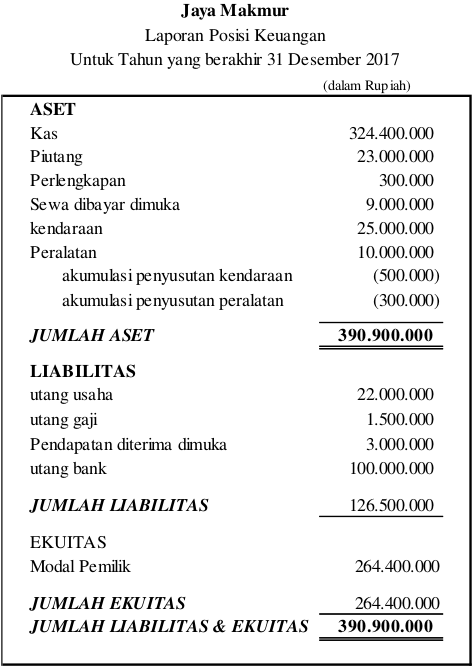

Neraca terdiri dari tiga unsur, yaitu aset, utang dan ekuitas. Informasi yang dapat disajikan di neracaantara lain posisi sumber kekayaan perusahan dan sumber pembeban an untuk memperoleh kekayaan perusahaan tersebut dalam suatu periode akuntansi, (bulan, triwulan, caturwulan, semesteran atau tahunan). Salah satu elemen yang terdapat di neraca, yaitu ekuitas (modal ditambah akun lain jika ada, seperti laba ditahan) bersumber dari laporan perubahan ekuitas. Ketika menyusun neraca, perlu memerhatikan saldo ekuitas akhir yang terdapat dalam laporan perubahan ekuitas.
Perhatikan modal pemilik pada sisi ekuitas, pada laporan tersebut modal pemilik sebesar Rp262.400.000,00 nilai tersebut didapat dari nilai modal per 31 Desember 2017 pada laporan perubahan ekuitas.